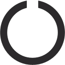

The Ohio State University Consent to Participate in Research
Study Title: Individual variation in attention, cognitive control, and memory
Researchers: Paul S. Scotti, Yoolim Hong, Julie D. Golomb, Andrew B. Leber
This is a consent form for research participation. It contains important information about this study and what to expect if you decide to participate.
Your participation is voluntary.
Please consider the information carefully. Feel free to email questions to the researchers before making your decision whether or not to participate. If you decide to participate, you will be asked to click a button below this form.
Purpose: In this experiment, we are interested in understanding how humans are able to control their attention to focus on relevant information, and how attention is related to other cognitive abilities and traits.
Procedures/Tasks: Your participation involves watching various visual events on a computer screen and responding to what you saw. Additionally, you may be asked to complete a survey. You will be provided with detailed written instructions at the start of each task or survey
Duration: The experiment is expected to take the duration listed in the HIT description, and will not exceed 60 minutes in duration. You may leave the study at any time. If you decide to stop participating in the study, there will be no penalty to you, and you will not lose any benefits to which you are otherwise entitled. Your decision will not affect your future relationship with The Ohio State University.
Risks and Benefits: There is no more risk associated with participation than you would normally encounter while playing a simple video game. Benefits include advance scientific knowledge, experiencing the research process, and learning about attention and cognitive control (via debriefing).
Confidentiality: Upon completed of the HIT, your Amazon Mechanical Turk Worker ID will be made available to the experimenters. Only select lab personnel will have access to the requester Mechanical Turk site, and Worker IDs will be used only to confirm study completion, assign compensation, and, in some cases, to invite you to participate in a follow-up study.
The data that you provide in the experiment will be stored temporarily on a secure private online server or on the web-survey platform Qualtrics, then transferred to our secure lab computers. Your name or contact information will not be collected during the experiment. Only select lab personnel who have received training in human subjects protection and clearance to handle data for this project will have access to your results. We will work to make sure that no one sees your data without approval. But, because we are using the Internet, there is a chance that someone could access your online responses without permission. In some cases, this information could be used to identify you. Your data will be protected with a code to reduce the risk that other people can view the responses. However, there are rare instances when the researcher may be required to share personally identifiable information. For example, in response to a complaint about the research, officials at The University and/or regulatory oversight government agencies (National Science Foundation) may access research data. The researcher is also required by law to report certain information to government and/or law enforcement officials (e.g., threatened violence against self or others, communicable diseases).
Incentives: You will receive the compensation amount listed in the HIT description (based on a rate of $6/hour). If you withdraw early for any reason, your payment will be prorated to the nearest increment of 10 minutes based on a $6/hour rate, up until the amount indicated in the HIT description. If you withdraw early, please contact the researcher at scotti.5@osu.edu to ensure you receive your compensation.
Participant Rights: You may refuse to participate in this study without penalty or loss of benefits to which you are otherwise entitled. If you are a student or employee at Ohio State, your decision will not affect your grades or employment status.
If you choose to participate in the study, you may discontinue participation at any time without penalty or loss of benefits. By consenting below, you do not give up any personal legal rights you may have as a participant in this study.
An Institutional Review Board responsible for human subjects research at The Ohio State University reviewed this research project and found it to be acceptable, according to applicable state and federal regulations and University policies designed to protect the rights and welfare of participants in research.
Contacts and Questions: For questions, concerns, or complaints about the study, or you feel you have been harmed as a result of study participation, you may contact either Paul Scotti at scotti.5@osu.edu or Andrew Leber at leber.30@osu.edu. For questions about your rights as a participant in this study or to discuss other study-related concerns or complaints with someone who is not part of the research team, you may contact Ms. Sandra Meadows in the Office of Responsible Research Practices at meadows.8@osu.edu.
Electronic consent: You may print a copy of this consent form for your records. If you wish to continue with the experiment, please click the button below.
Clicking the button below indicates that:
You have read the above information
You are 18 years of age or older
You voluntarily agree to participate
I consent to participate in this study
In this HIT, you will have to perform 2 separate tasks. It should take about 15 minutes total to complete. The first task is an attentional task and the second is a memory task.
In the first part, you will see colored objects presented one at a time. For example, one object may look like this:

If an object is ever immediately repeated (e.g., the same phone is presented twice in a row), then click on the screen using your mouse. Be aware that you only have 2 seconds to respond before the next object is presented. You will hear a high-pitched beep for a correct response and a low-pitched beep for an incorrect response.
After you have seen all of the objects, you will be tested on your memory for each object's color. A previously observed object will be presented on the screen, and you will be required to move your mouse around a black outside circle to adjust the color of the object. Once you feel you have matched the color of the object to its originally presented color, click using your mouse to lock in your answer and move on to the next object.

It is important that you be as precise and as accurate as possible when reporting the original colors for the objects. Also note that since this is an experiment designed to study memory, we advise that you do not take any breaks after starting this study.
To start off with, we'll give you a few practice trials. During practice, you will see colored objects presented one at a time. Remember to click on the screen as quickly as possible if an object is immediately repeated. After you have seen all the practice objects, you will then be asked to report the original colors of the objects.
Start ExperimentImages still loading. Please wait. 